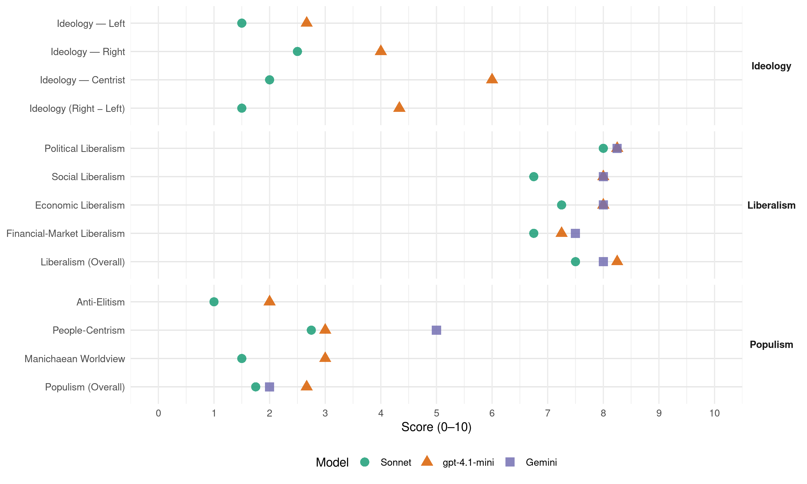

CDU/CSU (Germany, 2021)
manifesto_id 41521_202109
Get full text: This site shows derived annotations and short verbatim quotes only. The full manifesto text is © Manifesto Project / WZB — obtain it via manifesto-project.wzb.eu using the manifesto_id above.
Headline scores
| Dimension | Sonnet | gpt-4.1-mini | Gemini |
|---|---|---|---|
| Populism (Overall) | 1.8 | 2.7 | 2.0 |
| Anti-Elitism | 1.0 | 2.0 | – |
| People-Centrism | 2.8 | 3.0 | 5.0 |
| Manichaean Worldview | 1.5 | 3.0 | – |
| Ideology (Right − Left) | 1.5 | 4.3 | – |
| Liberalism (Overall) | 7.5 | 8.2 | 8.0 |
| Political Liberalism | 8.0 | 8.2 | 8.2 |
| Social Liberalism | 6.8 | 8.0 | 8.0 |
| Economic Liberalism | 7.2 | 8.0 | 8.0 |
| Financial-Market Liberalism | 6.8 | 7.2 | 7.5 |
Evidence per dimension
Economic Liberalism
Gemini · score 8.0 · verified · chunk 1
“freien und fairen Welthandel ein”
sowie den freien und fairen Welthandel ein. In unserem
Gemini · score 8.0 · verified · chunk 2
“auf effiziente marktwirtschaftliche Instrumente als Leitinstrumente”
Auf dem Weg zur Klimaneutralität setzen wir auf effiziente marktwirtschaftliche Instrumente als Leitinstrumente innerhalb eines Instrumentenmixes.
Gemini · score 9.0 · verified · chunk 3
“Besteuerung modernisieren und wettbewerbsfähig machen”
wir mit einer Unternehmenssteuerreform die Besteuerung modernisieren und wettbewerbsfähig machen. Leistung muss sich lohnen Wer sich anstrengt
Gemini · score 7.0 · verified · chunk 4
“Gewährleistung der Berufsfreiheit gerecht zu werden”
Schutzauftrag des Staates für die Schwächsten als auch der Gewährleistung der Berufsfreiheit gerecht zu werden. Wir wollen Prostitution von Schwangeren
gpt-4.1-mini · score 9.0 · verified · chunk 1
“Wir setzen auf die Ordnung des Marktes durch den Staat”
Gerade auch im Zeitalter der Globalisierung und Digitalisierung setzen wir auf die Ordnung des Marktes durch den Staat. Ein starker Staat ordnet die Wirtschaft und bestimmt die Regeln, nimmt aber selbst nicht am Geschehen teil.
gpt-4.1-mini · score 8.0 · verified · chunk 2
“Wir werden den Solidaritätszuschlag für alle schrittweise abschaffen und gleichzeitig kleine und mittlere Einkommen bei der Einkommensteuer entlasten”
Wir werden den Solidaritätszuschlag für alle schrittweise abschaffen und gleichzeitig kleine und mittlere Einkommen bei der Einkommensteuer entlasten. Wir werden auch künftig die Wirkungen der sogenannten kalten Progression ausgleichen, indem wir den Einkommensteuertarif regelmäßig an die allgemeine Preisentwicklung anpassen.
gpt-4.1-mini · score 8.0 · verified · chunk 3
“Wir wollen die Wirtschaft nach der Pandemie wieder in Schwung bringen”
Wir wollen die Wirtschaft nach der Pandemie wieder in Schwung bringen. Auf diesem Weg wäre es falsch, Steuern zu erhöhen. Wir stehen weiter für eine verantwortungsvolle und solide Finanzpolitik.
gpt-4.1-mini · score 7.0 · verified · chunk 4
“Wir setzen nicht auf rechtlich fragwürdige und ungeeignete Eingriffe, wie den Mietendeckel”
…Der beste Mieterschutz ist und bleibt ausreichender Wohnraum. Wir setzen nicht auf rechtlich fragwürdige und ungeeignete Eingriffe, wie den Mietendeckel, sondern packen das Problem an der Wurzel. Nur wenn das Wohnungsangebot steigt, können Mieten stabil bleiben…
Sonnet · score 8.0 · verified · chunk 1
“freien Welthandel mit fairen internationalen Wettbewerbsbedingungen”
Wir setzen auf einen freien Welthandel mit fairen internationalen Wettbewerbsbedingungen statt auf Protektionismus und Abschottung.
Sonnet · score 7.0 · verified · chunk 2
“marktwirtschaftliche Instrumente als Leitinstrumente”
Auf dem Weg zur Klimaneutralität setzen wir auf effiziente marktwirtschaftliche Instrumente als Leitinstrumente innerhalb eines Instrumentenmixes.
Sonnet · score 8.0 · verified · chunk 3
“wettbewerbsfähige Steuern”
5.2.Faire, leistungsgerechte und wettbewerbsfähige Steuern Wir wollen die Wirtschaft nach der Pandemie wieder in Schwung bringen
Sonnet · score 6.0 · verified · chunk 4
“starke Wirtschaftsbranche, gute Bedingungen”
Wir führen unsere Wohnraumoffensive fort und setzen auf eine starke Wirtschaftsbranche, gute Bedingungen und Wertschätzung für unser Handwerk
Financial-Market Liberalism
Gemini · score 8.0 · verified · chunk 1
“Finanzplatz Deutschland stärken”
5.3. Vermögensbildung für jeden73 5.4. Finanzplatz Deutschland stärken74
Gemini · score 7.0 · verified · chunk 2
“Deutschland zum führenden Finanzstandort, insbesondere für nachhaltige Produkte, ausbauen”
Innerhalb einer starken Banken- und Kapitalmarktunion wollen wir Deutschland zum führenden Finanzstandort, insbesondere für nachhaltige Produkte, ausbauen.
Gemini · score 8.0 · verified · chunk 3
“Deutschland zum führenden Finanzstandort, insbesondere für nachhaltige Produkte, ausbauen”
Banken- und Kapitalmarktunion wollen wir Deutschland zum führenden Finanzstandort, insbesondere für nachhaltige Produkte, ausbauen. Wir werden vor allem Bürokratie für Finanzmarktteilnehmer
Gemini · score 7.0 · verified · chunk 4
“mittels Banken möglich sein”
Grundstücke durch Barzahlung zu erwerben, soll nur mittels Banken möglich sein, die zuvor die Identität des Käufers
gpt-4.1-mini · score 8.0 · verified · chunk 1
“Wir bekennen uns zur Unabhängigkeit der Europäischen Zentralbank (EZB)”
Wir bekennen uns zur Unabhängigkeit der Europäischen Zentralbank (EZB). Geld- und Finanzpolitik müssen getrennt bleiben. Wir lehnen deshalb eine monetäre Staatsfinanzierung ab. Das übergeordnete Ziel der EZB bleibt die Wahrung der Geldwert- und Finanzstabilität.
gpt-4.1-mini · score 7.0 · verified · chunk 2
“Wir werden vor allem Bürokratie für Finanzmarktteilnehmer abbauen, Regeln modernisieren und die Rahmenbedingungen für Börsengänge verbessern”
Nur als starker und wettbewerbsfähiger Finanzplatz kann Deutschland auch weiterhin aktiv die Regulierung der internationalen Finanzmärkte mitgestalten. Innerhalb einer starken Banken- und Kapitalmarktunion wollen wir Deutschland zum führenden Finanzstandort, insbesondere für nachhaltige Produkte, ausbauen. Wir werden vor allem Bürokratie für Finanzmarktteilnehmer abbauen, Regeln modernisieren und die Rahmenbedingungen für Börsengänge verbessern.
gpt-4.1-mini · score 7.0 · verified · chunk 3
“Wir werden vor allem Bürokratie für Finanzmarktteilnehmer abbauen, Regeln modernisieren”
Wir werden vor allem Bürokratie für Finanzmarktteilnehmer abbauen, Regeln modernisieren und die Rahmenbedingungen für Börsengänge verbessern. Als starker Finanzplatz soll Deutschland für die Ansiedlung von EU-Institutionen attraktiver werden.
gpt-4.1-mini · score 7.0 · verified · chunk 4
“Wir wollen Geldwäsche noch konsequenter bekämpfen und verfassungskonform regeln”
…Wir wollen Geldwäsche noch konsequenter bekämpfen und verfassungskonform regeln, dass bei Vermögen unklarer Herkunft künftig eine vollständige Beweislastumkehr gilt. Grundstücke durch Barzahlung zu erwerben, soll nur mittels Banken möglich sein, die zuvor die Identität des Käufers und die Herkunft des Geldes prüfen…
Sonnet · score 8.0 · verified · chunk 1
“Unabhängigkeit der Europäischen Zentralbank (EZB)”
Wir bekennen uns zur Unabhängigkeit der Europäischen Zentralbank (EZB). Geld- und Finanzpolitik müssen getrennt bleiben. Wir lehnen deshalb eine monetäre Staatsfinanzierung ab.
Sonnet · score 7.0 · verified · chunk 2
“Finanzplatz Deutschland stärken”
Nur als starker und wettbewerbsfähiger Finanzplatz kann Deutschland auch weiterhin aktiv die Regulierung der internationalen Finanzmärkte mitgestalten. Innerhalb einer starken Banken- und Kapitalmarktunion wollen wir Deutschland zum führenden Finanzstandort ausbauen.
Sonnet · score 7.0 · verified · chunk 3
“starken Banken- und Kapitalmarktunion”
Innerhalb einer starken Banken- und Kapitalmarktunion wollen wir Deutschland zum führenden Finanzstandort, insbesondere für nachhaltige Produkte, ausbauen
Sonnet · score 5.0 · verified · chunk 4
“Grundstücke durch Barzahlung zu erwerben, soll nur mittels Banken möglich sein”
Grundstücke durch Barzahlung zu erwerben, soll nur mittels Banken möglich sein, die zuvor die Identität des Käufers und die Herkunft des Geldes im Rahmen einer bestehenden Geschäftsbeziehung zu prüfen haben
Political Liberalism
Gemini · score 9.0 · verified · chunk 1
“Schutz unserer Demokratie vor Extremisten”
9.5. Schutz unserer Demokratie vor Extremisten und Terroristen112
Gemini · score 8.0 · verified · chunk 2
“das Asylrecht ist ein individuelles Schutzrecht”
Sicherung des Lebensunterhaltes. Davon zu trennen ist die Hilfe für Menschen in Not. Das Asylrecht ist ein individuelles Schutzrecht und kein Ersatzeinwanderungsrecht.
Gemini · score 8.0 · verified · chunk 3
“unsere rechtsstaatlich verfasste, freiheitliche, plurale und repräsentative Demokratie”
en der allgemeinbildenden und beruflichen Schulen stärken. Unsere rechtsstaatlich verfasste, freiheitliche, plurale und repräsentative Demokratie ist nicht selbstverständlich. Sie muss stets aufs Neue
Gemini · score 8.0 · verified · chunk 4
“freiheitlich-demokratische Grundordnung”
die größte Bedrohung für unsere offene Gesellschaft und freiheitlich-demokratische Grundordnung. Dass rechtsextreme, ausländerfeindliche
gpt-4.1-mini · score 9.0 · verified · chunk 1
“Achtung von Demokratie und Rechtsstaatlichkeit sowie die Werte der liberalen Demokratie”
Die Achtung von Demokratie und Rechtsstaatlichkeit sowie die Werte der liberalen Demokratie gehören zu den Grundfesten der Europäischen Union. Hierzu gehört auch die Transparenz der europäischen Gesetzgebung für die Bürgerinnen und Bürger, die demokratischer und insgesamt bürgernäher werden muss.
gpt-4.1-mini · score 8.0 · verified · chunk 2
“Wir werden eine neue Beteiligungskultur schaffen, die mehr Transparenz in die Planung großer Bauprojekte bringt”
Wir werden eine neue Beteiligungskultur schaffen, die mehr Transparenz in die Planung großer Bauprojekte bringt und alle Akteure früh einbindet. Den Verwaltungsrechtsweg von Planungsverfahren werden wir verkürzen und das Verbandsklagerecht straffen sowie zeitlich bündeln.
gpt-4.1-mini · score 8.0 · verified · chunk 3
“Wir werden die politische Bildung in allen Jahrgangsstufen der allgemeinbildenden und beruflichen Schulen stärken”
Wir werden die politische Bildung in allen Jahrgangsstufen der allgemeinbildenden und beruflichen Schulen stärken. Unsere rechtsstaatlich verfasste, freiheitliche, plurale und repräsentative Demokratie ist nicht selbstverständlich.
gpt-4.1-mini · score 8.0 · verified · chunk 4
“Dem Deutschen Bundestag sollen künftig regelmäßig Extremismus-Berichte der Bundesregierung vorgelegt werden”
…Wir wollen mit gesetzlichen Regelungen die Abwehrkräfte unserer Demokratie stärken. Dem Deutschen Bundestag sollen künftig regelmäßig Extremismus-Berichte der Bundesregierung vorgelegt werden, die gesamtgesellschaftliche Entwicklungen mit Blick auf Demokratiefeindlichkeit, Antisemitismus und Rassismus ausleuchten…
Sonnet · score 9.0 · verified · chunk 1
“Demokratie und Rechtsstaatlichkeit sowie die Werte der liberalen Demokratie”
Die Achtung von Demokratie und Rechtsstaatlichkeit sowie die Werte der liberalen Demokratie gehören zu den Grundfesten der Europäischen Union.
Sonnet · score 7.0 · verified · chunk 2
“grundgesetzlichen Schuldenbremse”
Wir bekennen uns zur grundgesetzlichen Schuldenbremse. Sie hat in der Krise ihre Funktionsfähigkeit und Flexibilität bewiesen. Grundgesetzänderungen zur Aufweichung der Schuldenbremse lehnen wir ab.
Sonnet · score 8.0 · verified · chunk 3
“freiheitliche, plurale und repräsentative Demokratie”
Unsere rechtsstaatlich verfasste, freiheitliche, plurale und repräsentative Demokratie ist nicht selbstverständlich. Sie muss stets aufs Neue erlernt, gelebt und verteidigt werden
Sonnet · score 8.0 · verified · chunk 4
“freiheitlich-demokratische Grundordnung”
Der Rechtsextremismus bleibt die größte Bedrohung für unsere offene Gesellschaft und freiheitlich-demokratische Grundordnung.
Liberalism (Overall)
Gemini · score 8.0 · verified · chunk 1
“freien und fairen Welthandel ein”
sowie den freien und fairen Welthandel ein. In unserem
Gemini · score 8.0 · verified · chunk 2
“Prinzipien der Sozialen Marktwirtschaft sorgen wir”
Mit den Prinzipien der Sozialen Marktwirtschaft sorgen wir dafür, dass jeder Mensch in unserem Land eine gute medizinische
Gemini · score 8.0 · verified · chunk 3
“Besteuerung modernisieren und wettbewerbsfähig machen”
wir mit einer Unternehmenssteuerreform die Besteuerung modernisieren und wettbewerbsfähig machen. Leistung muss sich lohnen Wer sich anstrengt
Gemini · score 8.0 · verified · chunk 4
“freiheitlich-demokratische Grundordnung”
die größte Bedrohung für unsere offene Gesellschaft und freiheitlich-demokratische Grundordnung. Dass rechtsextreme, ausländerfeindliche
gpt-4.1-mini · score 9.0 · verified · chunk 1
“Wir bekennen uns zur Unabhängigkeit der Europäischen Zentralbank (EZB)”
Wir bekennen uns zur Unabhängigkeit der Europäischen Zentralbank (EZB). Geld- und Finanzpolitik müssen getrennt bleiben. Wir lehnen deshalb eine monetäre Staatsfinanzierung ab. Das übergeordnete Ziel der EZB bleibt die Wahrung der Geldwert- und Finanzstabilität.
gpt-4.1-mini · score 8.0 · verified · chunk 2
“Wir werden eine neue Beteiligungskultur schaffen, die mehr Transparenz in die Planung großer Bauprojekte bringt”
Wir werden eine neue Beteiligungskultur schaffen, die mehr Transparenz in die Planung großer Bauprojekte bringt und alle Akteure früh einbindet. Den Verwaltungsrechtsweg von Planungsverfahren werden wir verkürzen und das Verbandsklagerecht straffen sowie zeitlich bündeln.
gpt-4.1-mini · score 8.0 · verified · chunk 3
“Wir wollen die politische Bildung in allen Jahrgangsstufen der allgemeinbildenden und beruflichen Schulen stärken”
Wir werden die politische Bildung in allen Jahrgangsstufen der allgemeinbildenden und beruflichen Schulen stärken. Unsere rechtsstaatlich verfasste, freiheitliche, plurale und repräsentative Demokratie ist nicht selbstverständlich.
gpt-4.1-mini · score 8.0 · verified · chunk 4
“Wir wollen mit gesetzlichen Regelungen die Abwehrkräfte unserer Demokratie stärken”
…Wir wollen mit gesetzlichen Regelungen die Abwehrkräfte unserer Demokratie stärken. Dem Deutschen Bundestag sollen künftig regelmäßig Extremismus-Berichte der Bundesregierung vorgelegt werden, die gesamtgesellschaftliche Entwicklungen mit Blick auf Demokratiefeindlichkeit, Antisemitismus und Rassismus ausleuchten…
Sonnet · score 8.0 · verified · chunk 1
“Soziale Marktwirtschaft ist die Wirtschaftsordnung unserer freiheitlichen Demokratie”
Die Soziale Marktwirtschaft ist die Wirtschaftsordnung unserer freiheitlichen Demokratie. Sie ist Fundament unseres Erfolgs als innovative, leistungsfähige und nachhaltige Volkswirtschaft.
Sonnet · score 7.0 · verified · chunk 2
“marktwirtschaftliche Instrumente als Leitinstrumente”
Auf dem Weg zur Klimaneutralität setzen wir auf effiziente marktwirtschaftliche Instrumente als Leitinstrumente innerhalb eines Instrumentenmixes.
Sonnet · score 8.0 · verified · chunk 3
“freiheitliche, plurale und repräsentative Demokratie”
Unsere rechtsstaatlich verfasste, freiheitliche, plurale und repräsentative Demokratie ist nicht selbstverständlich. Sie muss stets aufs Neue erlernt, gelebt und verteidigt werden
Sonnet · score 7.0 · verified · chunk 4
“freie und pluralistische Medien Grundpfeiler einer verantwortungsvollen demokratischen Gesellschaft”
Für uns sind freie und pluralistische Medien Grundpfeiler einer verantwortungsvollen demokratischen Gesellschaft.
Anti-Elitism
gpt-4.1-mini · score 2.0 · verified · chunk 1
“Populisten von links und rechts die europäische Demokratie unter Druck”
Europa wird herausgefordert - von innen und von außen. Innerhalb Europas setzen Populisten von links und rechts die europäische Demokratie unter Druck. Zusätzlich erschweren Nationalismus und Eigeninteressen einiger EU-Mitgliedsstaaten immer wieder gemeinsame europäische Lösungen oder verhindern ein Auftreten der EU mit einer Stimme.
gpt-4.1-mini · score 2.0 · verified · chunk 3
“CDU und CSU denken Politik von der Mitte der Gesellschaft”
CDU und CSU denken Politik von der Mitte der Gesellschaft und tragen damit eine Verantwortung für alle Bürgerinnen und Bürger. Diese Verantwortung nehmen wir auch im digitalen Wandel wahr.
gpt-4.1-mini · score 2.0 · verified · chunk 4
“Wir wollen, dass die ideologische Basis des Islamismus genauer in den Blick genommen wird.”
…Islamismus ist eine extremistische politische Ideologie. Wir bekämpfen ihn mit der ganzen Härte unseres Rechtsstaates. Dieser Kampf gilt denen, die Hass und Gewalt schüren und eine islamistische Ordnung anstreben. Wir wollen, dass die ideologische Basis des Islamismus genauer in den Blick genommen wird. Wir dulden dabei keinerlei Rückzugsräume…
Sonnet · score 1.0 · verified · chunk 1
“populistische Strömungen ausbreiten, auch in demokratischen Staaten”
wir sehen, dass sich weltweit populistische Strömungen ausbreiten, auch in demokratischen Staaten. Hinzu kommt: Neue Technologien
Sonnet · score 1.0 · verified · chunk 2
“multinationale Konzerne”
Das gilt insbesondere für multinationale Konzerne. Wir werden weiter Steuerschlupflöcher schließen
Sonnet · score 1.0 · mixed · chunk 3
“multinationale Konzerne”
Niemand darf sich seiner Verantwortung für die Gesellschaft entziehen. Das gilt insbesondere für multinationale Konzerne. Wir werden weiter Steuerschlupflöcher schließen
Sonnet · score 1.0 · verified · chunk 4
“Der Staat ist da und lässt sich nicht auf der Nase herumtanzen”
So zeigen wir auch bei kleineren Rechtsbrüchen: Der Staat ist da und lässt sich nicht auf der Nase herumtanzen!
Ideology — Centrist
gpt-4.1-mini · score 6.0 · verified · chunk 1
“Wir verbinden sie. Weil wir wissen: Gerade in einer individualisierten Gesellschaft”
Wir spielen vermeintliche Gegensätze und unterschiedliche Gruppen nicht gegeneinander aus. Wir verbinden sie. Weil wir wissen: Gerade in einer individualisierten Gesellschaft ist es wichtig, dass wir bei den großen Fragen in eine gemeinsame Richtung gehen, dass jeder die Gewissheit hat, Teil eines Ganzen zu sein - ob jung oder alt, ob auf dem Land oder in der Stadt, ob Arbeitnehmer oder Arbeitgeber.
gpt-4.1-mini · score 7.0 · verified · chunk 3
“CDU und CSU denken Politik von der Mitte der Gesellschaft”
CDU und CSU denken Politik von der Mitte der Gesellschaft und tragen damit eine Verantwortung für alle Bürgerinnen und Bürger. Diese Verantwortung nehmen wir auch im digitalen Wandel wahr.
gpt-4.1-mini · score 5.0 · verified · chunk 4
“Wir sind eine offene Gesellschaft, in der alle ihre Träume verwirklichen können”
…Ob großstädtischer Kiez, Kleinstadt oder Dorf: Wir respektieren und schützen jede Form von Heimat. Wir sind eine offene Gesellschaft, in der alle ihre Träume verwirklichen können - und niemand eingeredet bekommen darf, wie er zu wohnen und zu leben hat…
Sonnet · score 2.0 · verified · chunk 1
“halten Maß und Mitte”
stürmen wir nicht blind ins Morgen, sondern halten Maß und Mitte. Das bedeutet auch: Wir werden nichts versprechen
Sonnet · score 1.0 · verified · chunk 2
“Modernisierungsjahrzehnt”
In unserem Modernisierungsjahrzehnt setzen wir auf Nachhaltigkeit und eröffnen allen Sparten der Landwirtschaft neue Wege
Sonnet · score 3.0 · verified · chunk 3
“Teilhabe geht vor Umverteilung”
5.3.Vermögensbildung für jeden Teilhabe geht vor Umverteilung. Wir wollen, dass die Menschen in unserem Land Erfolg haben
Sonnet · score 2.0 · verified · chunk 4
“Deutschland ist ein tolerantes und weltoffenes Land”
9.5.Schutz unserer Demokratie vor Extremisten und Terroristen Deutschland ist ein tolerantes und weltoffenes Land.
Ideology — Left
gpt-4.1-mini · score 3.0 · verified · chunk 1
“Soziale Marktwirtschaft statt sozialistischer Umverteilung”
Wir haben für diese Aufgabe die richtigen Werte und Prinzipien: Vernunft statt Ideologie, Innovationen statt Verbote, Soziale Marktwirtschaft statt sozialistischer Umverteilung, Chancen statt Ängste, Respekt statt Bevormundung für Familien, christliches Menschenbild und gesellschaftliche Vielfalt statt vorgefertigter Lebensentwürfe für jeden Einzelnen.
gpt-4.1-mini · score 3.0 · verified · chunk 3
“Wir wollen, dass die Menschen in unserem Land Erfolg haben und sich Wohlstand aufbauen können”
Umverteilung. Wir wollen, dass die Menschen in unserem Land Erfolg haben und sich Wohlstand aufbauen können. „Wohlstand für alle“ im 21. Jahrhundert heißt für uns: Vermögensaufbau für alle Menschen attraktiv gestalten - unabhängig von Beschäftigungsverhältnis und Einkommen.
gpt-4.1-mini · score 2.0 · verified · chunk 4
“Wir wollen die psychosoziale Prozessbegleitung stärken und einen Rechtsanspruch auf kostenlose Opferhilfe umsetzen.”
…Dem Opferschutz wollen wir ein stärkeres Gewicht in der polizeilichen und justiziellen Aus- und Weiterbildung geben. Wir wollen die psychosoziale Prozessbegleitung stärken und einen Rechtsanspruch auf kostenlose Opferhilfe umsetzen. Auch unser Strafrecht wollen wir noch mehr auf den Opferschutz ausrichten und Intensiv- und Wiederholungstäter wirksam aus dem Verkehr ziehen…
Sonnet · score 1.0 · verified · chunk 1
“Soziale Marktwirtschaft statt sozialistischer Umverteilung”
Vernunft statt Ideologie, Innovationen statt Verbote, Soziale Marktwirtschaft statt sozialistischer Umverteilung
Sonnet · score 2.0 · verified · chunk 2
“Sozialpartnerschaft stärken”
Die Sozialpartnerschaft, die Tarifautonomie und die Mitbestimmung haben wesentlich dazu beigetragen, dass Deutschland eine weltweit führende Industrienation geworden ist.
Sonnet · score 2.0 · verified · chunk 3
“Steuerschlupflöcher schließen”
Wir werden weiter Steuerschlupflöcher schließen, Steuerhinterziehung sowie schädliche Formen des Steuerwettbewerbs wirksam unterbinden
Sonnet · score 1.0 · verified · chunk 4
“sozialen Wohnungsbau weiter fördern”
Wir werden den sozialen Wohnungsbau weiter fördern und das Wohngeld ab 2022 regelmäßig anpassen.
Ideology (Right − Left)
gpt-4.1-mini · score 4.0 · verified · chunk 1
“Populisten von links und rechts die europäische Demokratie unter Druck”
Europa wird herausgefordert - von innen und von außen. Innerhalb Europas setzen Populisten von links und rechts die europäische Demokratie unter Druck. Zusätzlich erschweren Nationalismus und Eigeninteressen einiger EU-Mitgliedsstaaten immer wieder gemeinsame europäische Lösungen oder verhindern ein Auftreten der EU mit einer Stimme.
gpt-4.1-mini · score 5.0 · verified · chunk 3
“CDU und CSU denken Politik von der Mitte der Gesellschaft”
CDU und CSU denken Politik von der Mitte der Gesellschaft und tragen damit eine Verantwortung für alle Bürgerinnen und Bürger. Diese Verantwortung nehmen wir auch im digitalen Wandel wahr.
gpt-4.1-mini · score 4.0 · verified · chunk 4
“Wir treten jeder Form von Extremismus und Rassismus, jeder Form von Gewalt und Terror entschieden entgegen”
…Wir treten jeder Form von Extremismus und Rassismus, jeder Form von Gewalt und Terror entschieden entgegen - unabhängig davon, ob es sich um Rechts- oder Linksextremisten oder gewaltbereite Islamisten handelt. Jede Form einer Schwächung des Verfassungsschutzes lehnen wir ab…
Sonnet · score 1.0 · verified · chunk 1
“Populisten von links und rechts”
Innerhalb Europas setzen Populisten von links und rechts die europäische Demokratie unter Druck.
Sonnet · score 1.0 · verified · chunk 2
“Leistung muss sich lohnen”
Wer sich anstrengt, wer etwas wagt, soll auch dafür belohnt werden. Das ist praktizierte Leistungsgerechtigkeit.
Sonnet · score 2.0 · verified · chunk 3
“Teilhabe geht vor Umverteilung”
5.3.Vermögensbildung für jeden Teilhabe geht vor Umverteilung. Wir wollen, dass die Menschen in unserem Land Erfolg haben
Sonnet · score 2.0 · verified · chunk 4
“Null-Toleranz-Strategie und Politik der tausend Nadelstiche”
Mit unserer Null-Toleranz-Strategie und Politik der tausend Nadelstiche werden wir den Kontroll- und Verfolgungsdruck auf kriminelle Clans weiter erhöhen.
Ideology — Right
gpt-4.1-mini · score 4.0 · verified · chunk 1
“Wir wollen keine illegale Migration und Ausreisepflichten durchsetzen”
Unsere Politik steht daher im Zeichen einer wirksamen Ordnung und Steuerung von Migration. Das bedeutet: Wir wollen keine illegale Migration und Ausreisepflichten durchsetzen. Dies ist die Voraussetzung dafür, dass wir notleidenden Menschen dauerhaft helfen können.
gpt-4.1-mini · score 4.0 · verified · chunk 3
“Wir wollen, dass sich möglichst viele Menschen für ein Leben mit Kindern entscheiden”
Wir stehen für Familienfreundlichkeit und wollen, dass sich möglichst viele Menschen für ein Leben mit Kindern entscheiden. Unser Ziel ist es, das Elterngeld weiter zu stärken und gerade Väter zu ermutigen, stärker als bisher das Elterngeld zu nutzen.
gpt-4.1-mini · score 4.0 · verified · chunk 4
“Wir treten jeder Form von Extremismus und Rassismus, jeder Form von Gewalt und Terror entschieden entgegen”
…Wir treten jeder Form von Extremismus und Rassismus, jeder Form von Gewalt und Terror entschieden entgegen - unabhängig davon, ob es sich um Rechts- oder Linksextremisten oder gewaltbereite Islamisten handelt. Jede Form einer Schwächung des Verfassungsschutzes lehnen wir ab…
Sonnet · score 2.0 · verified · chunk 1
“illegale Migration und Ausreisepflichten durchsetzen”
Wir wollen keine illegale Migration und Ausreisepflichten durchsetzen. Dies ist die Voraussetzung dafür
Sonnet · score 2.0 · verified · chunk 2
“gesteuerten Zuzug gut ausgebildeter”
Für eine gezielte und gesteuerte Zuwanderung in den Arbeitsmarkt setzen wir weiterhin am Fachkräftebedarf von Mittelstand und Industrie an
Sonnet · score 2.0 · verified · chunk 3
“Schleierfahndung kontrolliert werden darf”
wollen wir, dass überall in Deutschland mithilfe einer lagebildabhängigen Schleierfahndung kontrolliert werden darf
Sonnet · score 4.0 · verified · chunk 4
“Abschiebungen und Grundrechtsverwirkungen”
Dazu gehören Verbote von verfassungsfeindlichen Organisationen und Vereinen, Verbote von Symbolen des Hasses und des Terrors, Einreise- und Aufenthaltsverbote, Ausweisungen, Abschiebungen und Grundrechtsverwirkungen.
Manichaean Worldview
gpt-4.1-mini · score 3.0 · verified · chunk 1
“Gegnern der Freiheit zu trotzen”
Mit Präsident Joe Biden verbinden wir die Chance eines neuen Aufbruchs für die transatlantische Partnerschaft. Nur in enger Abstimmung werden wir gestaltende Impulse in der Klima-, Handels-, Wissenschafts- und Technologiepolitik setzen können. Unser Ziel muss sein, gemeinsam den Gegnern der Freiheit zu trotzen, globale Standards zu setzen und unseren technologischen Vorsprung zu wahren und auszubauen.
gpt-4.1-mini · score 3.0 · verified · chunk 4
“Extremisten und Terroristen gefährden unsere Sicherheit und den Frieden”
…Deutschland ist ein tolerantes und weltoffenes Land. Doch Toleranz und Weltoffenheit sollte niemand als Schwäche missverstehen. Extremisten und Terroristen gefährden unsere Sicherheit und den Frieden in unserem Land. Sie zu bekämpfen sowie unsere Freiheit und offene Gesellschaft zu verteidigen, sind zwei Seiten derselben Medaille…
Sonnet · score 2.0 · verified · chunk 1
“Soziale Marktwirtschaft statt sozialistischer Umverteilung”
Vernunft statt Ideologie, Innovationen statt Verbote, Soziale Marktwirtschaft statt sozialistischer Umverteilung, Chancen statt Ängste
Sonnet · score 1.0 · verified · chunk 2
“Niemand darf sich seiner Verantwortung”
Niemand darf sich seiner Verantwortung für die Gesellschaft entziehen und sich ärmer rechnen, als er ist.
Sonnet · score 1.0 · verified · chunk 3
“Feinde unserer Verfassung”
im Kampf gegen die Feinde unserer Verfassung, gegen Terroristen, in der Abwehr von Gefahren aus dem Cyberraum
Sonnet · score 2.0 · verified · chunk 4
“Extremisten und Terroristen gefährden unsere Sicherheit”
Extremisten und Terroristen gefährden unsere Sicherheit und den Frieden in unserem Land.
People-Centrism
Gemini · score 5.0 · verified · chunk 1
“Verdienst der Bürgerinnen und Bürger”
Das ist vor allem ein Verdienst der Bürgerinnen und Bürger, die jeden Tag anpacken
gpt-4.1-mini · score 3.0 · verified · chunk 1
“Jeder die Gewissheit hat, Teil eines Ganzen zu sein”
Wir spielen vermeintliche Gegensätze und unterschiedliche Gruppen nicht gegeneinander aus. Wir verbinden sie. Weil wir wissen: Gerade in einer individualisierten Gesellschaft ist es wichtig, dass wir bei den großen Fragen in eine gemeinsame Richtung gehen, dass jeder die Gewissheit hat, Teil eines Ganzen zu sein - ob jung oder alt, ob auf dem Land oder in der Stadt, ob Arbeitnehmer oder Arbeitgeber.
gpt-4.1-mini · score 3.0 · verified · chunk 3
“Familien sind die Leistungsträger unserer Gesellschaft”
Wir wollen gezielt Familien finanziell stärken. Sie sind die Leistungsträger unserer Gesellschaft. Wir halten am Ehegattensplitting fest und wollen unabhängig davon zusätzlich Ansätze entwickeln, um Kinder positiv zu berücksichtigen.
gpt-4.1-mini · score 3.0 · verified · chunk 4
“Wir sind eine offene Gesellschaft, in der alle ihre Träume verwirklichen können”
…Ob großstädtischer Kiez, Kleinstadt oder Dorf: Wir respektieren und schützen jede Form von Heimat. Wir sind eine offene Gesellschaft, in der alle ihre Träume verwirklichen können - und niemand eingeredet bekommen darf, wie er zu wohnen und zu leben hat…
Sonnet · score 3.0 · verified · chunk 1
“Bürgerinnen und Bürger im Mittelpunkt”
8.2.Die Bürgerinnen und Bürger im Mittelpunkt 99 8.3.Der öffentliche Dienst als moderner Arbeitgeber
Sonnet · score 2.0 · verified · chunk 2
“Leistung muss sich lohnen”
Wer sich anstrengt, wer etwas wagt, soll auch dafür belohnt werden. Das ist praktizierte Leistungsgerechtigkeit. Wir wollen deshalb Spielräume, soweit sie sich eröffnen, nutzen, um die Menschen zu entlasten, die jeden Tag Leistung erbringen
Sonnet · score 3.0 · verified · chunk 3
“Leistungsträger unserer Gesellschaft”
Sie sind die starke Mitte und die Leistungsträger unserer Gesellschaft. Wir haben die finanzielle Situation junger Familien spürbar verbessert
Sonnet · score 3.0 · verified · chunk 4
“aufgeklärte und selbstbewusste Bürgerinnen und Bürger sind der stärkste Schutz”
Denn aufgeklärte und selbstbewusste Bürgerinnen und Bürger sind der stärkste Schutz für unsere Demokratie.
Populism (Overall)
Gemini · score 2.0 · verified · chunk 1
“Verdienst der Bürgerinnen und Bürger”
Das ist vor allem ein Verdienst der Bürgerinnen und Bürger, die jeden Tag anpacken
gpt-4.1-mini · score 3.0 · verified · chunk 1
“Populisten von links und rechts die europäische Demokratie unter Druck”
Europa wird herausgefordert - von innen und von außen. Innerhalb Europas setzen Populisten von links und rechts die europäische Demokratie unter Druck. Zusätzlich erschweren Nationalismus und Eigeninteressen einiger EU-Mitgliedsstaaten immer wieder gemeinsame europäische Lösungen oder verhindern ein Auftreten der EU mit einer Stimme.
gpt-4.1-mini · score 2.0 · verified · chunk 3
“CDU und CSU denken Politik von der Mitte der Gesellschaft”
CDU und CSU denken Politik von der Mitte der Gesellschaft und tragen damit eine Verantwortung für alle Bürgerinnen und Bürger. Diese Verantwortung nehmen wir auch im digitalen Wandel wahr.
gpt-4.1-mini · score 3.0 · verified · chunk 4
“Extremisten und Terroristen gefährden unsere Sicherheit und den Frieden”
…Deutschland ist ein tolerantes und weltoffenes Land. Doch Toleranz und Weltoffenheit sollte niemand als Schwäche missverstehen. Extremisten und Terroristen gefährden unsere Sicherheit und den Frieden in unserem Land. Sie zu bekämpfen sowie unsere Freiheit und offene Gesellschaft zu verteidigen, sind zwei Seiten derselben Medaille…
Sonnet · score 2.0 · verified · chunk 1
“Populisten von links und rechts die europäische Demokratie”
Innerhalb Europas setzen Populisten von links und rechts die europäische Demokratie unter Druck.
Sonnet · score 1.0 · verified · chunk 2
“Leistung muss sich lohnen”
Wer sich anstrengt, wer etwas wagt, soll auch dafür belohnt werden. Das ist praktizierte Leistungsgerechtigkeit.
Sonnet · score 2.0 · verified · chunk 3
“Leistungsträger unserer Gesellschaft”
Sie sind die starke Mitte und die Leistungsträger unserer Gesellschaft. Wir haben die finanzielle Situation junger Familien spürbar verbessert
Sonnet · score 2.0 · verified · chunk 4
“Null Toleranz gegenüber kriminellen Familienclans”
9.4.Null Toleranz gegenüber kriminellen Familienclans Die von kriminellen Familienclans begangene organisierte Kriminalität stellt eine spezielle Bedrohung der Sicherheit dar
Social Liberalism